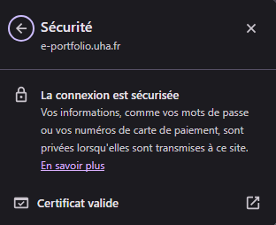
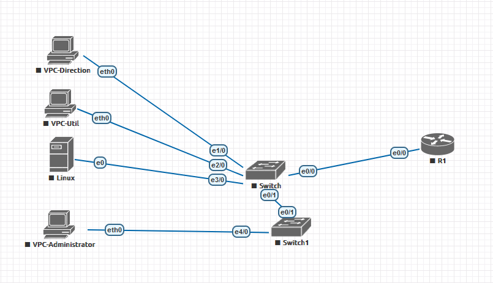
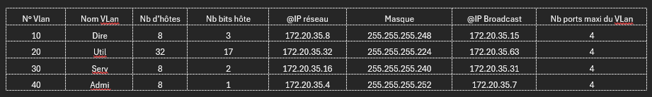
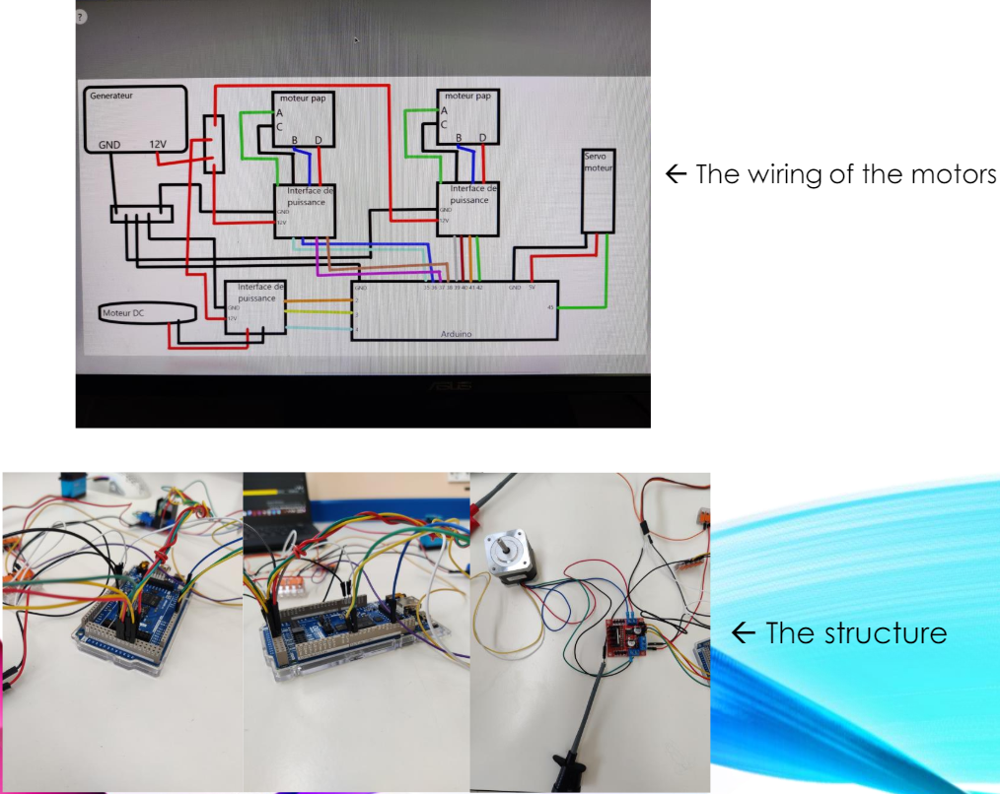
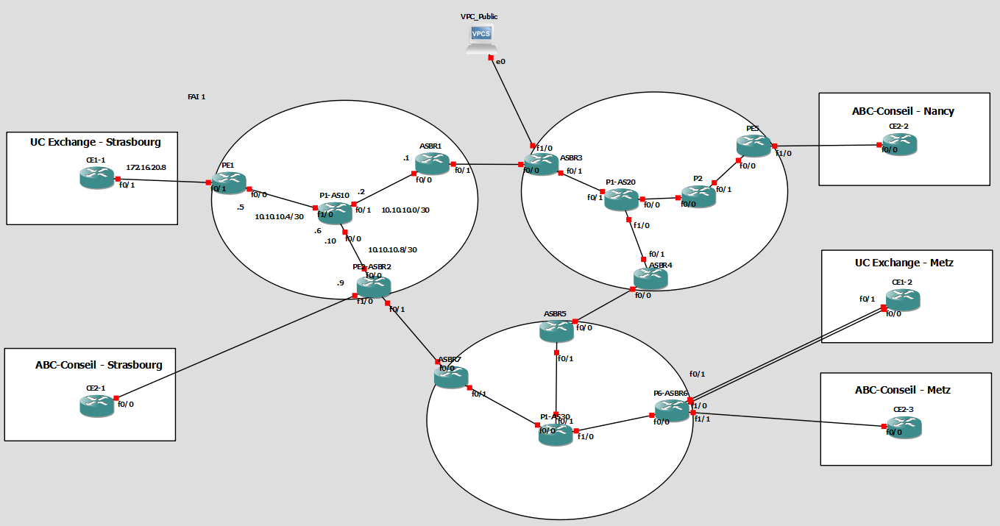

UE x.1 – Administrer les réseaux et l’Internet
Dans cette UE, nous avons appris à choisir les solutions et technologies réseau adaptées, à configurer, dépanner et sécuriser l’infrastructure, à documenter nos actions et à mener une veille technologique continue, en appliquant rigoureusement les composantes essentielles CE1.01 à CE1.05.
SAÉ1.01 – Sensibilisation à l’hygiène informatique
Compétence : Hygiène Informatique & Cybersécurité
Description
Découverte des principales menaces, bonnes pratiques et outils de vérification pour maintenir un environnement numérique sécurisé.
Preuves et traces
- Vidéo de présentation : YouTube
- Exemple de pratique : authentification d’un site HTTPS (cadenas, certificat, alertes navigateur).
- 
Conclusion
Acquis : compréhension des menaces, réflexes d’hygiène informatique,
vérification d’authenticité des sites.
Utilité directe en R&T : participation à la sécurité des SI et des données.
SAÉ1.02 – S’initier aux réseaux informatiques
Compétence : Réseaux informatiques
Description
Mise en place d’un laboratoire virtuel EVE-NG : configuration de routeur & switch Cisco, VLANs, adressage IP.
Preuves et traces
- Capture EVE-NG : topologie + configs.
- 
- Table des adresses IP.
- 
Conclusion
Acquis : configuration de routeurs/commutateurs, segmentation par VLAN, prise en main d’EVE-NG pour des maquettes réseau.
SAE2.05 – Portfolio & poster d’activité
Compétence : Présentation de projet
Description
Création d’un poster + document réflexif sur un robot d’aide aux personnes à mobilité réduite (lycée).
Preuves et traces
- Captures : robot, câblage moteurs, Raspberry Pi ↔ Arduino.
- 
Conclusion
Acquis : programmation moteurs (Arduino), interfaçage Raspberry Pi, gestion de projet & communication technique.
SAE3.Cyber.03 – Réseau multi-sites sécurisé
Compétence : Conception d’architecture sécurisée
SAE3.03 – Réseau multi-sites sécurisé
Contexte et Objectifs
Dans cette SAE, l’objectif était de concevoir, configurer et sécuriser l’interconnexion multi-sites de deux entreprises (UC Exchange & ABC Conseil) réparties sur plusieurs villes, en passant par un FAI simulé. J’ai personnellement réalisé toute la partie FAI : conception, configuration, sécurisation et documentation de l’architecture opérateur.
- Haute disponibilité & tolérance aux pannes (liens redondants, VRRP…)
- Segmentation réseau (VLAN & VRF)
- Routage inter-sites et inter-AS (RIP, OSPF, BGP, MPLS-VPN)
- Déploiement des services (DNS, Web, Mail)
- Sécurisation (ACL, NAT, filtrage)
Architecture et Solutions Techniques
- 3 AS : AS10 (UC Exchange), AS20 (ABC Conseil), AS30 (FAI)
- VRF pour isolation des clients (UC_Exchange, ABC_Conseil)
- MSTP & VRRP pour redondance et basculement
- Routage : RIP (AS10/20), OSPF (AS30), BGP/MP-BGP (inter-AS, VPNv4)
- NAT statique/dynamique pour exposer les services internes
Services Déployés
- DNS (Windows & Linux, DNSSEC)
- Web (Apache, intranet & extranet)
- Mail (SMTP/IMAP, tests Telnet)
- Active Directory (Windows)
Sécurité et Tests
- ACL pour filtrage (SSH restreint)
- NAT pour accès public (e.g. 192.168.40.1 → 11.11.11.1)
- Tests de ping intra-AS, inter-sites et coupures pour valider la redondance
- Accès public simulé via VPC_public (9.9.9.9)
Compétences acquises
- Conception d’architectures multi-sites hiérarchiques et scalables
- Configuration avancée LAN (VLAN, MSTP, VRRP)
- Routage opérateur (MPLS, VRF, BGP)
- Déploiement et sécurisation de services réseau
Exemple de configuration
ip vrf UC_Exchange
rd 10:2
route-target export 10:2
route-target import 10:2
router bgp 10
neighbor 10.10.4.4 remote-as 10
address-family vpnv4
neighbor 10.10.4.4 activate
neighbor 10.10.4.4 send-community extended
Illustration de l’architecture FAI
Ajoutez ici votre capture d’écran :
Conclusion
Cette SAE m’a permis de mettre en œuvre l’ensemble des compétences nécessaires au déploiement d’une architecture réseau professionnelle, résiliente et sécurisée, de la couche LAN jusqu’au cœur opérateur.